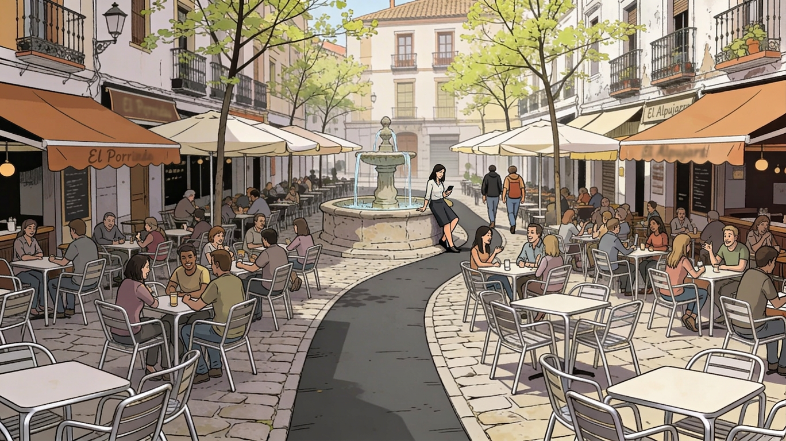
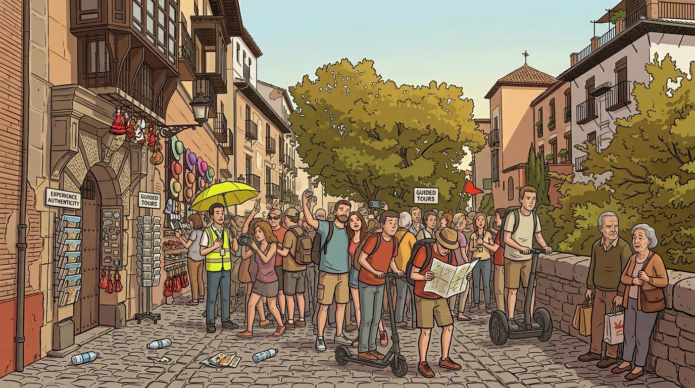

The Flâneur Under Siege
Plazas, Miradors, and the Disputed Public Realm
The flâneur, in the tradition that produced the figure, was precisely the one whose virtue lay in not needing to be classified. The contemporary historic centre, alas, has acquired a strong administrative preference for being able to tell at a glance who you are and what you intend to spend.
There is a particular condition of being a resident that the present chapter wants to describe before the description becomes complaint. It is the condition of standing somewhere in the centre of one’s own city, with no purpose other than to be standing there, and discovering that the city has stopped being able to accommodate the gesture. The discovery does not arrive as an obstruction; obstruction would be easier to name. It arrives as a low, sustained pressure to either consume something, queue for something, or move along. The pressure has no single author. It is the cumulative effect of decisions taken in different offices at different times, each within the legitimate scope of its own competence, whose combined consequence is that the only categories of presence the central districts now reliably recognise are visitor with itinerary and resident with errand. The figure who is neither — the slow, anonymous, non-purposive observer who used to constitute, in the literature on cities, the privileged sensorium of urban life — has been quietly removed from the schedule.
The Plaza Bib-Rambla is the case to begin with, because it is the plaza the city’s own tourist materials would still choose, and because what has happened to it can be described without exaggeration. The plaza retains its dimensions, its façades, its central fountain and the old confectionery on its eastern side. What were once booksellers’ kiosks are now, in the main, florists’ kiosks, of which one or two remain open on a given morning; the books appear, when they appear at all, on the days the city authorises the temporary stalls of an artisans’ market or the spring book fair, occasions which have the additional feature of compressing the available walking surface to the exasperating minimum that is now its baseline at any moment of festive intensification. What the plaza has shed, over the period this volume covers, is the proportion of its surface available to a person who is not a customer of one of the hospitality establishments that now occupy it. The chairs face, with the businesslike attention of an audience, the diminishing strip of plaza that remains. The visitor who counts the public benches available for sitting, and then counts the waste containers, will discover that the municipal authorities have, by some procedure not made public, arranged for the second category to outnumber the first.
If the imprint of a hospitality terrace on the disputed public realm can be described in any sufficiently drastic register, Bib-Rambla and several of the other emblematic plazas have, in recent years, discovered how. They have moved from chairs and parasols, which at least had the courtesy of being movable, to permanent metal frames fitted with lateral panels of plastic or glass, which delimit each terrace as the architecturally reaffirmed extension of an interior establishment whose floor area is, as a rule, a fraction of the surface its terrace now occupies on a twenty-four-hour basis. The disproportion between the interior the licensee actually owns and the exterior he has been authorised to colonise around the clock is the variable that distinguishes the present arrangement from the older one, in which a terrace at least had the decency to be dismantled overnight and to return what it was not using to the public domain. Where, until recently, only the uniformity of furniture suggested the possibility of an industrial strategy quietly coordinating Granada’s terraces, the new generation of fixed metal structures, awnings and glazed side panels has done away with the need for inference: they colonise the already reduced public space on a permanent and non-removable basis, and they do so under municipal cabinets of differing political signatures whose enthusiastic convergence on the same arrangement would be improbable in the absence of an incentive sufficiently powerful to guarantee it. The footprint exists; it is a measurable thing; the municipal ordinance that defines it is on file; the willingness of the same ordinance to license footprints whose sum approaches the surface of the plaza is the matter for which the explanatory framework is missing, although the framework is not, in the end, particularly difficult to imagine.
The fountain at the centre, with the small square of garden around it, holds out with the morale of an institution that has accepted the terms of its defeat and is interested mainly in the dignity of the surrender. It is now the only feature of the plaza that has not been quoted as a candidate for commercial use, although it is probably only a question of time before someone calculates the viability of a smoothie operation with a half-circle of low stools around the basin. To this one should add the LED cone which, having appeared with sufficient regularity around the Christmas period, has ceased to require a season: its absence, at this point, would be the novelty. None of the foregoing will surprise the reader who has walked through the surrounding streets on the way to the plaza: the commercial transformation of the central districts under heaviest tourist load already prepares the visitor, without surprises, for what he will find in this plaza and in the others nearby. Without surprises is the operative phrase. The system has reached the stage at which its outputs are predictable in advance from a single street corner, which is itself a kind of finished state.

Plate VI. Small plaza, central Granada, spring, midday. A nineteenth-century stone fountain occupies the geometric centre of the square; it is functioning. On its left, one establishment has deployed approximately thirty aluminium chairs and twelve tables across the cobbled surface; on its right, another has made a comparable contribution. The resulting configuration leaves a curved asphalt strip of some two metres’ width as the pedestrian right of way, which two individuals are presently exercising, in single file, with the lateral clearance available to them. A third figure has elected to consult her telephone while seated on the fountain’s edge, the fountain being, at this hour, the only unoccupied civic fixture in the square. Several young trees have been planted at intervals; they are providing less shade than the synthetic-fibre awnings extending over them, a circumstance that is expected to resolve itself in due course. The cobblestones beneath the tables are in good condition and are not visible.
The Carrera del Darro and the Paseo de los Tristes, taken together, form one of the most photographed urban sequences in Europe. The reader who has wondered about the title of this volume and has not yet arrived at a satisfactory gloss will derive one without further assistance from any attempt to walk along either of them on a weekday afternoon in April or on a Saturday morning in any month. The eight-metre cross-section is what it is; the guided groups whose itineraries converge on it walk exactly as a guided visitor is supposed to walk; the slow walker who tries to look up while doing so becomes, by simple geometry, an obstacle. The Cuesta de Gomérez adds a slope to the same problem, which sorts the stream of pedestrians by speed and accelerates the conversion of the slow walker into something the rest of the stream has to flow around. The fault, if the word still applies, lies neither with the visitors nor with the streets but with the geometry into which the numbers have been poured without any corresponding adjustment of the carrying capacity it was designed for.
I notice that I am within a sentence of beginning to enumerate the other corners of the centre that retain something the chapter values, and I should stop. To name them would be to inscribe them, by the same act, on the list of famously atmospheric spots from which they have so far escaped, and the conferring of that adjective is, on the evidence assembled in this volume, the most reliable single predictor of the subsequent loss of whatever the adjective was meant to register. The kinder service the present chapter can perform on behalf of those corners is to leave them unnamed.
The Mirador de San Nicolás was, until perhaps fifteen years ago, the place to which a resident would go in late afternoon to sit on the low wall and watch the light move across the Alhambra. It still is, in the sense that the wall and the light are both still there. The conditions under which a resident could perform the act, however, have been displaced; and the displacement, on close inspection, has the structure of a small economy.
The local with the rucksack who has been on the mirador since well before the first visitor arrived is, on closer inspection, the proprietor of a small inventory of artisanal objects whose presentation he will arrange on a cloth as soon as the foot traffic justifies it. The musician whose guitar drifts agreeably out of tune over the parapet is finishing the night before, on the working hypothesis that an unexpectedly long evening can be retroactively financed by performing its closing minutes in front of an audience that has just arrived. The visitor patiently waiting for an unobstructed turn at the wall is, in a meaningful proportion of cases, composing the photograph for a content commitment whose sponsorship arrangements have already been negotiated. Even the apparently disinterested companion is often a holder of the second camera. And the staff of the second-rank and third-rank terraces strung along the approaches are waiting, with the patience of people who know the conversion rate, for the return of the visitors who have stood at the parapet rather longer than they had planned and who will require, on the way back down, something to sit on and something to drink. The mirador, in short, has been quietly reorganised so that no human presence on it is structurally outside the local economy of the view; the resident who shows up without a function is no longer absent from a category, he is the category, and the category is the one the apparatus does not know how to bill.
The mirador now operates as a queue for a particular kind of photograph; the wall serves as a foreground for that photograph; the late light is itself a scheduling input to the photograph; and a person sitting on the wall without a camera is read by the surrounding apparatus as either an obstruction to the queue or as a candidate for one of the buskers’ opening gambits. The Alhambra, viewed from across the valley, is the same Alhambra it has always been. What has changed is that the act of viewing it from across the valley is no longer a use the place is configured to accommodate. The monument itself, viewed from inside, has been on a timed-entry regime for many years; the regime is operationally necessary and aesthetically defensible, and it is also, in Lefebvre’s sense, the most visible single instance of the conversion of a place from a site of habitation into a product to be consumed in slots (1968).
The Alhambra and the Generalife together received in the order of 2.7 million visitors in 2024, a figure that has been quietly hovering at or near the upper bound of the monument’s declared carrying capacity for several seasons (Patronato de la Alhambra y Generalife 2025). The municipal ordinance regulating outdoor terraces in the centre permits licensed footprints whose aggregate surface, in the principal central plazas, has been the subject of repeated neighbour-association complaints and at least two appeals to the Defensor del Pueblo Andaluz; the precise figure varies year to year and is not, in any case, the variable that matters most. What matters is the proportion of central public space whose status has shifted from common to licensed, and the degree to which the shift is reversible by ordinary administrative action — which is to say, almost not at all, because each licensed footprint is also a small business, an employment relationship, a tax contribution and a vested expectation. Sharon Zukin’s term for what tends to follow is pacification by cappuccino (2010); the term has the merit of being accurate and the further merit of being slightly funnier than what it describes. The associated environmental burdens are no longer marginal in the literature: a recent BMJ review treats chronic exposure to urban noise above WHO thresholds as a public-health issue with documented cardiovascular and metabolic consequences (Razai et al. 2025), and the cognitive literature has now extended the concern to the children for whom such districts are simply where they live and try to learn (Dohmen et al. 2022).
The reader will have noticed that I am within a sentence of converting all this into a complaint about tourism, which is the wrong complaint. Tourism is the visible mechanism, not the underlying one. The underlying mechanism is the slow conversion of the central public realm from a space of right — the residents’ right to be in it without justification — into a space of licence, in which presence requires either a ticket, a transaction, or a recognised errand. Tourism happens to be the largest current beneficiary of the conversion. It is not its sole author, and it would not, if it disappeared tomorrow, automatically restore what has been lost.
There is, finally, a sensory layer the previous chapter did not name and that this one cannot honourably omit, because it is the layer against which the resident is least able to defend himself. On the worst days — the still ones, the hot ones, the ones during which the ozone in the metropolitan basin reaches the levels that the Granada-Norte and Armilla stations have been recording with documented regularity for several years (Ecologistas en Acción 2019) — the air over the centre acquires a quality that is not exactly bad and not exactly painful but that the body recognises as something it would prefer not to be inhaling. To this baseline the metropolitan belt occasionally adds a more specific contribution. There is, between the city and Armilla, a manufacturing facility that produces fragrance compounds, and which from time to time releases a load whose distribution depends on the prevailing wind. The result, on the days the wind is wrong, is that several square kilometres of central Granada are placed under an olfactory canopy whose intensity exceeds anything one would normally associate with the substances in question. The detail one is required to register, with the deadpan attention this volume tries to maintain, is that the substance in question is, in its intended commercial use, sold as something a person applies to herself voluntarily, in small quantities, and at considerable expense. The category error is administrative rather than poetic, but the resident bears it.
There remains, as a partial consolation the chapter declines to name too loudly, a residual archipelago of central spaces that have so far escaped the conversion. They are the places where the metrics that govern the conversion — visitor counts, photographic opportunities, hospitality footprint per square metre — happen to fall, for the moment, below whatever threshold currently triggers commercial attention. They include certain stretches of the upper Albaicín on weekday mornings, the lower paths along the Genil after the cyclists have passed, the cemeteries (which are everywhere underestimated as places in which to walk slowly), and a small number of plazas whose names the resident familiar with them will recognise without needing them written down. To name them more precisely than this would be to begin the work of naming that the rest of this volume has been documenting. The flâneur in present-day Granada has not been abolished; he has been displaced to the margins of the centre that bears his image, and his survival now depends on the same property the centre has taken to selling — namely, anonymity — being available somewhere it is not yet for sale. The third correction, the one I find that I cannot quite make, is the suspicion that the displacement is not the end of the process this volume has been describing but its penultimate stage, and that what looks from inside like consolation is simply the period during which the surveying has not yet been completed.

Plate VII. Cobbled street, central Granada, mid-morning, present day. The location is a section of one of the most walked sequences in the historic centre, here depicted slightly wider than the surface actually permits, in keeping with the representational conventions of the city’s promotional materials. Two guided groups are visible in the central plane, a third inferable from the red flag at the upper right; their itineraries appear to converge on the same eight-metre cross-section. The guide’s yellow umbrella, held in the raised position, has over the last decade become the single most reliable indicator that a stretch of public space has entered the touristic phase of its life. A Segway and an electric scooter are crossing the cobbles at speeds inconsistent with the surface. A souvenir display occupies a portion of the left-hand pavement that no municipal ordinance is presently withholding from it, and a notice above the doorway behind it invites the passing visitor to Experience Authenticity, a formulation in which the verb has been recruited to compensate for the noun. Two empty bottles and a discarded leaflet have been disposed of by the only method the immediate environment appears to encourage. At the right-hand margin, an elderly couple have pressed themselves against the parapet of the embankment to allow the central body of pedestrians to flow past; their posture suggests long familiarity with the manoeuvre. Their facial expressions are the only ones in the image not directed at a camera, a guide, a screen or a destination, and the apparatus has, in consequence, declined to register them. Outside the frame, immediately behind the illustrator, a taxi driver is waiting for the photographic session to conclude before resuming his ascent towards the Cuesta del Chapiz; his fare has not been recorded.The scene has been documented in approximately every Mediterranean historic centre over the last decade without material variation.